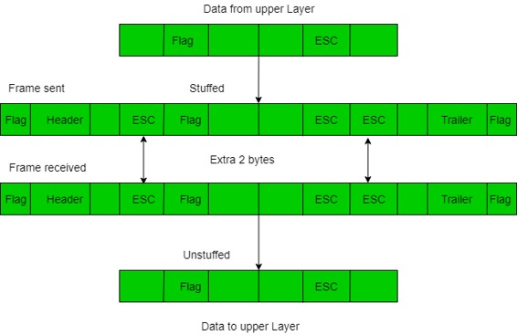

Framing is a point-to-point connection between two computers or devices consists of a wire in which data is transmitted as a stream of bits. However, these bits must be framed into discernible blocks of information. Framing is a function of the data link layer. It provides a way for a sender to transmit a set of bits that are meaningful to the receiver. Ethernet, token ring, frame relay, and other data link layer technologies have their own frame structures. Frames have headers that contain information such as error-checking codes.

At data link layer, it extracts message from sender and provide it to receiver by providing sender’s and receiver’s address. The advantage of using frames is that data is broken up into recoverable chunks that can easily be checked for corruption.
Problems in Framing –
- Detecting start of the frame: When a frame is transmitted, every station must be able to detect it. Station detect frames by looking out for special sequence of bits that marks the beginning of the frame i.e. SFD (Starting Frame Delimeter).
- How do station detect a frame: Every station listen to link for SFD pattern through a sequential circuit. If SFD is detected, sequential circuit alerts station. Station checks destination address to accept or reject frame.
- Detecting end of frame: When to stop reading the frame.
Types of framing – There are two types of framing:
1. Fixed size – The frame is of fixed size and there is no need to provide boundaries to the frame, length of the frame itself acts as delimiter.
- Drawback: It suffers from internal fragmentation if data size is less than frame size
- Solution: Padding
2. Variable size – In this there is need to define end of frame as well as beginning of next frame to distinguish. This can be done in two ways:
- Length field – We can introduce a length field in the frame to indicate the length of the frame. Used in Ethernet(802.3). The problem with this is that sometimes the length field might get corrupted.
- End Delimeter (ED) – We can introduce an ED(pattern) to indicate the end of the frame. Used in Token Ring. The problem with this is that ED can occur in the data. This can be solved by:
1. Character/Byte Stuffing: Used when frames consist of character. If data contains ED then, byte is stuffed into data to diffentiate it from ED.Let ED = “$” –> if data contains ‘$’ anywhere, it can be escaped using ‘\O’ character.
–> if data contains ‘\O$’ then, use ‘\O\O\O$'($ is escaped using \O and \O is escaped using \O).
Disadvantage – It is very costly and obsolete method.
2. Bit Stuffing: Let ED = 01111 and if data = 01111
–> Sender stuffs a bit to break the pattern i.e. here appends a 0 in data = 011101.
–> Receiver receives the frame.
–> If data contains 011101, receiver removes the 0 and reads the data.
Examples –
- If Data –> 011100011110 and ED –> 01111 then, find data after bit stuffing ?
–> 01110000111010
- If Data –> 110001001 and ED –> 1000 then, find data after bit stuffing ?
–> 11001010011
- Gate CS 2014
- Gate IT 2004
- If Data –> 011100011110 and ED –> 01111 then, find data after bit stuffing ?